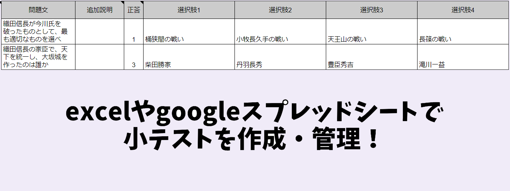
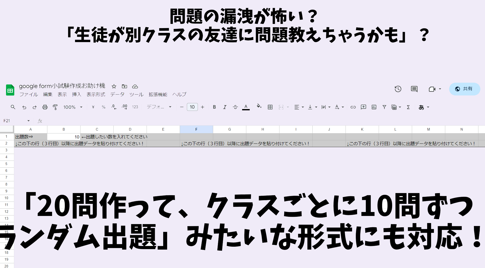

小テスト労力削減プロジェクト
概要
前説
・令和五年現在、学習指導要領の改訂が続いています
・その結果として（特に中高の）現場の先生方には、小テスト実施の圧力が強まっています
・毎週、何なら毎授業で小テストをやれ、と言われているような状態です
・言うまでもなく、これはとんでもない負担です
⇒仮に「週３時間の授業を６クラス持っている」「１クラス３０人」として、毎週小テスト実施するだけで毎週１８０人ぶんの答案を採点する事になります。教員の過重労働が問題になっているこの時代に、無茶言うなバカタレという話で…
そこで！ 皆さん、機械の力を使って労力を削減しませんか！！
・今どきの中高生なんか皆タブレットなりノートPC配られてますし、そうでなくても携帯持ってます ・彼らが持っている端末で試験を受けさせ、労力を削減しましょう！ ・以下、本プロジェクトでできること

１：選択肢式の小テストを、excel、googleスプレッドシートで作成・管理できる

２：単一選択、複数選択の両方に対応

３：20問作って10問をランダム出題みたいな事ができる
４：小テストが自動採点される（googleフォームの標準機能）
５：成績を学年組番号順に並べ替えできる（googleスプレッドシートの標準機能）
６：アンケート作成にも対応（小テストだけでなくアンケートも、excelやgoogleスプレッドシートで作成できる）
注意事項
・なお、本プロジェクトでは選択肢式の小テストのみ対応しています
・記述問題は正解が沢山できてしまうので、機械による自動採点とは極めて相性が悪いです
例１：薩長同盟の立役者とされており、また海援隊を作ったとされるのは？
⇒坂本龍馬だけど坂本竜馬でもいいし、何なら本名は坂本直陰もしくは坂本直柔だし…
例２：現在、デンマーク王国がある半島の名前は？
⇒英語ならジェットランド半島だし、ドイツ語ならユートラント半島だし、日本では両者が混ざったユトランド半島って呼ばれてるし…なんならﾕﾄﾗﾝﾄﾞ半島って表記してもいい訳で……
・そういうのもあって、小テストでは選択肢式の採用を強く推奨します
⇒そもそも小テストは、授業時間を圧迫しないよう数分で終わらせるのが理想ですし… 「漢字を書かせたい」がある科目、例えば日本史でも、期末試験でやればいいだけだし……
本プロジェクトの使用方法
事前準備
１：こちらの文章をクリックし、その後「ドキュメントのコピー」をクリックしてください
※そしてこのページに戻ってきてください
※画像のような画面にならず、「google」「ログイン」と出てきた場合は↓の「※googleとかログインとか出た場合はこちら」をクリック
googleとかログインとか出た場合はこちら
本プロジェクトではgoogleの機能を使用するので、googleにログインする必要があります。
gmailを使ったことがあるのであれば、gmailアドレスを持っている筈です。gmailアドレスを使ってログインしてください。
gmailアドレスがない場合は、新規作成します。
※大抵の教員は、gmailアドレスを学校から配られていると思いますので、それを使うとよいでしょう
●gmailアドレスを持っている場合
１：「メールアドレスまたは電話番号」にあなたのgmailアドレスを入力し、「次へ」をクリック
２：「パスワードを入力」にあなたのパスワードを入力し、「次へ」をクリック
３：「ドキュメントのコピー」が出てきます
※２の後、下の方の「後で行う」をクリックしないと３に辿り着けない場合もあります
●gmailアドレスを持っていない場合
この辺りを参考に、gmailアドレスを作成してください</a>


２：「コピー ～ google form小試験作成お助け機」が、googleスプレッドシートで開かれます
※こいつを使って、小テストを作成していきます
※なお、「コピー ～ google form小試験作成お助け機」はあなたのgoogleドライブの「マイドライブ」に入っています。こちらをクリックして「マイドライブ」を開き、確認してみましょう
試験作成
１：スプレッドシートに問題を入力していきます
※慣れている人以外は、白いセルのみ入力してください。灰色のセルは弄らないでください
※うっかり灰色のセルを弄っちゃった場合は↑の画像の赤で囲んだところをクリックすると戻ります
※どのセルに何をどう入力すればいいかは、スプレッドシートに記載してあります
①右上に黒三角があるセルに
②↑の画像のようにマウスポインタを持っていくと
③↑の画像のように、何をどのように入力すればいいか出てきます
２：試験の打ち込みが終わったら、「拡張機能」をクリック、更に「Apps Script」をクリック
※「Apps Script」をクリックすると新しいタブが開かれて、↓のような画面になります

３：「デバッグ」の右が「createForm▼」になっているのを確認して、「実行」をクリック
※「createForm▼」になっていない場合は、該当箇所をクリックした上でcreateFormをクリックしてください
※この後の手順４５は初回のみ必要なものですので、折りたたみました。以下の「手順４５はこちら」をクリックして確認してください。二回目以降の人は手順６へ飛びます
手順４５はこちら

４（初回のみ）：「承認が必要です」と出るので、「権限を確認」

５（初回のみ）：↑のような画面になるので、「許可」をクリック

６：↑の画像のように、実行ログが出てきます。「実行完了」と出てきたら、試験作成完了です

７：試験は、あなたの「マイドライブ」に作成されます。ダブルクリックして試験を開き、確認しましょう
※マイドライブはこちら。もうブックマークしておきましょう
※試験の名前は、スプレッドシートのB1セルに入れたものになっています
※試験を開くと、学年組番号氏名入力ゾーンの更に下に、あなたが入力して作った問題があります

８（推奨）：試験が正常に作成されているのを確認したら、「設定」タブをクリック ⇒「成績の発表」を「送信直後」に、「不正解だった質問」「正解」「点数」をオンにするとよいでしょう
※必須の操作ではありませんが、試験返却の手間が省けるので推奨します
※ここの設定は、どうも自動ではできないみたいです。なので手動でお願いします
９：右上の「送信」、続いて知恵の輪マーク、そして「コピー」を順番にクリック。後は、コピーしたURLを生徒に教えれば、生徒は試験を受けられます
※コピーしたURLを生徒に教える方法は何でも構いません。メールでも、LINE（かLINEに類似したチャットツール）でも、QRコードでも、ロイロノートのwebカードも…
試験情報漏洩を心配する人向け機能（ランダム出題機能）の使用
・ところで、これから「googleフォームで小テストをやろう！！」という話を自分の学校でしたい皆さん
・こんなことを言う同僚が出てくる可能性を心配していませんか？
・「小テストの情報の漏洩が気になる」「紙の試験なら生徒の記憶だけが頼りだけど、生徒のタブレットとか携帯で試験となると…」

・…と言う訳にもいかないので、何か説得材料が必要な訳ですが…
・そんな時オススメしたいのが、「20問作ってクラスごとに10問をランダム出題」メソッドです
・「とにかく問題を多めに作って」「クラスや実施日ごとにランダム出題する」というやり方を提案すると、概ね通ります
・そのための機能もご用意してあります。以下で使い方を解説します